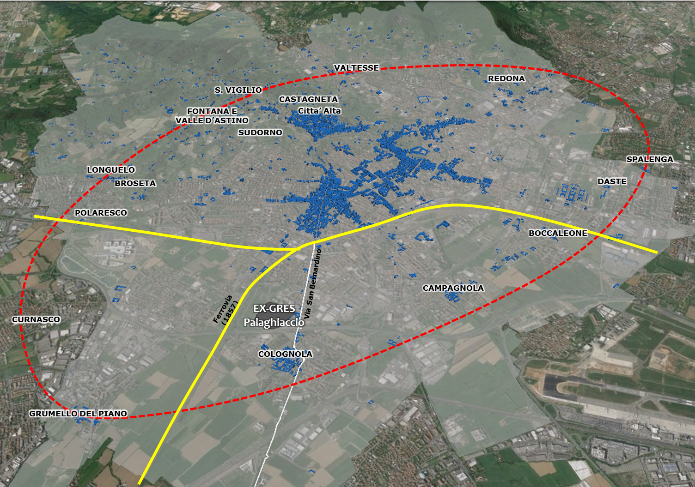

| Il Corpo Santo di Colognola e la ferrovia nell’800 |
|  La cintura dei Corpi Santi che circondava Bergamo con la sottolineatura delle prime fratture urbane |
| Il
primo avvenimento che crea una cesura tra Corpi Santi e città è la costruzione
della ferrovia nel 1857. Tuttavia, oggi, assumendo il motto che “si conserva solo
trasformando” la ferrovia, elemento chiave della trasformazione, oltre che
letta come vincolo ed elemento problematico, deve essere pensata come
opportunità su cui agire. Infatti, essa riguarda l’area meridionale e occidentale,
e precisamente Grumello del Piano, Colognola, Campagnola, Boccaleone, interferendo
nel particolare rapporto intercorso nel tempo con il nucleo cittadino ma ciò non
ha distrutto l’identità dei Corpi Santi che rimangono tuttora elementi ben riconoscibili
sul territorio. Per esempio, Colognola, il Corpo Santo a cui apparteneva l’area dello stabilimento ex-Gres, mantiene ancora oggi la struttura insediativa compatta dei borghi rurali della pianura, delimitata da fossi e da strade che ricalcano l'antico recinto del centro storico. La presenza di un nucleo urbano nella zona è documentata fin dal 1173 e la sua nascita potrebbe essere collegata alla realizzazione di un processo di bonifica e di riordino generale di questa porzione del territorio. I caratteri dell'edificato rispecchiano ancora le tipologie a corte di dimensioni omogenee, costituite da ambiti abitati, con stalle, portici, aie, che creano una cortina omogenea lungo le vie interne. Non mancano emergenze architettoniche che rispecchiano la stratificazione dei domini, dalle case medievali fortificate dei Suardi, lungo la via Rampinelli, alla settecentesca villa Tasca, con giardino. A corona del nucleo storico sono disposti elementi puntuali come la chiesa di S. Pietro ai Campi, con un campanile che documenta la preesistenza romanica. Lungo i percorsi delle rogge Guidana e Morlana, esterni al recinto abitato, si trovavano diversi insediamenti produttivi, come i mulini da grano, risalenti almeno al XIII secolo. A nord dell’area dell’ex-Gres, lungo l'attuale via S. Bernardino, si trova il complesso appartenuto ai Rampinelli, gestori di una importante segheria, anche prima del 1887 quando si costruirà lo stabilimento industriale del Gres (Resmini, Mazzariol, 2006). |